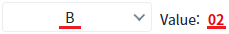
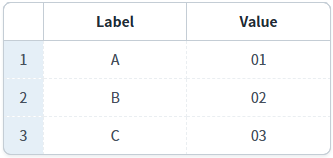

[AutoComplete] DataList와 바인딩하여 선택 항목을 설정하기
1개요
AutoComplete의 선택 목록을 DataList와 연동하는 예제입니다.
2구현된 기능
DataList의 데이터와 연동해 선택 목록에 표시
3예제 테스트 방법
1
STEP 1: 초기 상태 확인하기
AutoComplete의 목록을 확인합니다.
Image 1.브라우저(Chrome) 실행 예시 - AutoComplete의 목록

AutoComplete의 항목을 선택하고 컴포넌트의 오른쪽에 출력된 항목의 값을 확인합니다. 'B' 항목을 선택하면 오른쪽에 'Value: 02'가 표시됩니다.
Image 2.브라우저(Chrome) 실행 예시 - AutoComplete의 항목 선택

예제 영역 'DataList 확인용 GridView'에 구성된 GridView는 AutoComplete의 목록에 연결된 DataList가 연결되었습니다. AutoComplete의 항목을 변경하여 화면의 표시 문자열과 값이 GridView에 표시된 값과 동일한지 확인합니다.
Image 3.브라우저(Chrome) 실행 예시 - DataList 확인용 GridView

4구현 예시
4.1AutoComplete의 SelectBox 설정하기
1
웹스퀘어 스튜디오의 디자인 탭에서 AutoComplete을 더블클릭하여 목록을 설정합니다.
AutoComplete을 더블클릭하면 목록을 설정할 수 있는 설정 창이 표시됩니다. 설정 창에서 'BindItemSet'을 체크하고 아래와 같이 설정합니다. - NodeSet : 연동할 DataList - Label : 선택 목록에 표시할 텍스트 컬럼 - Value : 선택한 아이템의 값 컬럼
Example 1.설정 예시
- NodeSet: data:dlt_exam1 - Label: label - Value: code
Image 4.웹스퀘어 스튜디오 예시

Example 2.Source
<w2:autoComplete> <w2:itemset nodeset="data:dlt_exam1"> <w2:label ref="label"></w2:label> <w2:value ref="code"></w2:value> </w2:itemset> </w2:autoComplete>